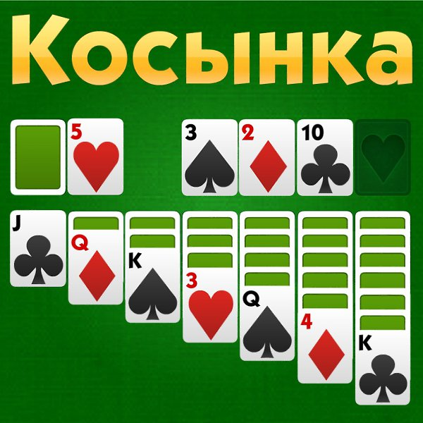

PortalPortal — компьютерная игра в жанре головоломки от первого лица, разработанная американской компанией Valve Corporation и выпущенная 10 октября 2007 года на платформах Windows и Xbox 360 в составе сборника The Orange Box. Портированная версия для приставки PlayStation 3 разрабатывалась британской студией EA UK и была выпущена 11 декабря 2007 года. скачать торрент |

Portal:IIPortal 2 — компьютерная игра в жанре головоломки от первого лица, продолжение игры Portal, разработанная компанией Valve Corporation. Игра была официально анонсирована Valve 5 марта 2010 года. Изначально её выпуск планировался осенью того же года, однако после нескольких переносов датой выхода Portal 2 было назначено 18 апреля 2011 года. скачать торрент |

ТетрисТе́трис — компьютерная игра, первоначально изобретённая и разработанная советским программистом Алексеем Пажитновым. Игра была выпущена 6 июня 1984 года — в это время Пажитнов работал в Вычислительном центре Академии наук СССР. «Тетрис» представляет собой головоломку, построенную на использовании геометрических фигур «тетрамино» — разновидности полимино, состоящих из четырёх квадратов. скачать торрент |

КосынкаИграется одной колодой в 52 карты. Цель игры — разложить карты по мастям в порядке от туза до короля в четыре стопки (их иногда называют базовыми, или «домами»). Карту можно перекладывать на другую рангом выше, но другого цвета (чёрного или красного). В каждую из четырёх базовых стопок (домов), по которым необходимо разложить все карты, сначала кладутся тузы, затем двойки, тройки и так далее до короля. скачать торрент |